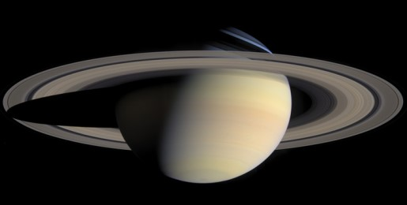

Saturne (9,5 UA), connue pour son système d'anneaux, possède des caractéristiques similaires à Jupiter, comme sa composition atmosphérique. Elle est moins massive (95 masses terrestres) et possède 60 satellites connus (ainsi que trois non confirmés) ; deux d'entre eux, Titan et Encelade, présentent des signes d'activité géologique, essentiellement du cryovolcanisme. Titan est plus grand que Mercure, il est le seul satellite du système solaire à avoir une atmosphère substantielle. Sa période de révolution est d'environ 29 ans.